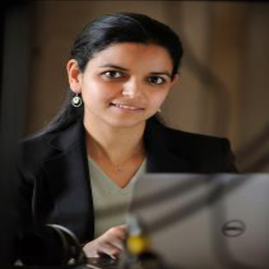
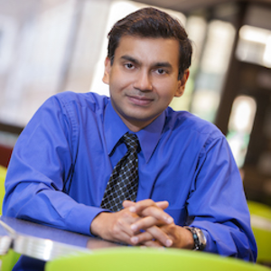
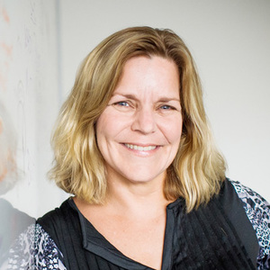
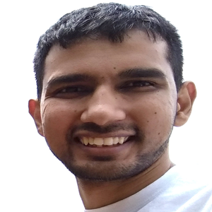
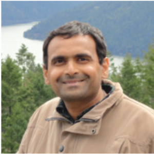
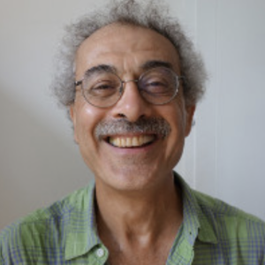
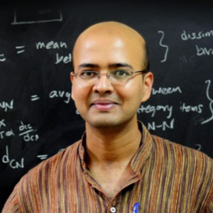

Workshop on
Neural Systems - Science and Engineering
January 23 - 25, 2019
Faculty Hall, Indian Institute of Science, Bangalore
Sponsored by the Pratiksha Trust and Indian Institute of Science
January 23 - 25, 2019
Faculty Hall, Indian Institute of Science, Bangalore
Sponsored by the Pratiksha Trust and Indian Institute of Science
Understanding the processes involved in brain functions like audition and vision forms an important and growing area of interdisciplinary research. These approaches and associated techniques have acted as a melting pot for researchers from disparate disciplines to come together and address one of the grandest challenges of the 21st century. The grandness of the challenge and the requirement on diverse forms of expertise has deemed that such endeavors require synergistic interactions among neurobiologists, electrical engineers and computer scientists. Over the past decade or two, neurobiologists have made significant conceptual advances in our understanding of the brain through technical breakthroughs that have yielded unprecedented opportunities to gather large-scale structural and functional data. Learning and understanding theses tools would enable computer scientists and data analysts to develop exceptional tools to address questions in machine learning and signal processing, tools that are not only helpful in emulating brain function, but also are radically transforming many applications in information and communication technologies. This workshop titled "Neural Systems - Science and Engineering" falls under the broader theme of activities in IISc under the banner of Brain Computation and Learning (BCL) . The current workshop is aimed at creating this useful dialogue between neurobiologists and computer scientists and educating research students of each area with relevant topics of the other.
A prominent goal of this workshop is to promote synergistic interactions among neuroscientists, electrical engineers, and computer scientists. The workshop would allow young researchers to understand the diverse themes of research and appreciate the close relationships between these apparently distinct themes.
This workshop is funded by a generous endowment from the Pratiksha Trust, which has been significantly promoting fundamental and translational neuroscience research within the country through the establishment of research centres and chair professorships at the Indian Institutes of Science (Bangalore).
The venue is Faculty Hall (inside IISc Main Building), IISc Bangalore. Map of IISc and workshop venue . You can click on icons for more information.
Additional visitor information at the IISc website , and NMI
|
Lori Holt
Carnegie Mellon University Understanding how humans interpret the complexity of spoken language
Experience deeply shapes how human listeners perceive spoken language. We learn long-term phonetic representations and words that respect the sound structure of our native language and, yet, we maintain enough flexibility to make sense of experience with nonnative accents or speech from imperfect computer synthesis. There are rich behavioral-science literatures that speak to the many ways that experience shapes speech perception. Yet, for the most part, contemporary neurobiological models of spoken language are oriented toward characterization of the system in a stable state. We are just beginning to understand the learning mechanisms involved in supporting successful human speech communication. I will describe how experience shapes speech perception at different time scales - from the influence of a single precursor sound, to distributions of sounds across seconds, to statistical regularities in acoustics experienced across multiple training sessions.
|
|

Mounya Elhilali
Johns Hopkins University Reverse-engineering auditory computations in the brain The perceptual organization of sounds in the environment into coherent objects is a feat constantly facing the auditory system. It manifests itself in the everyday challenge to humans and animals alike to parse complex acoustic information arising from multiple sound sources into separate auditory streams. While seemingly effortless, uncovering the neural mechanisms and computational principles underlying this remarkable ability remain a challenge facing both brain sciences and engineering systems. The perceptual organization of sounds in the environment into coherent objects is a feat constantly facing the auditory system. It manifests itself in the everyday challenge to humans and animals alike to parse complex acoustic information arising from multiple sound sources into separate auditory streams. While seemingly effortless, uncovering the neural mechanisms and computational principles underlying this remarkable ability remain a challenge facing both brain sciences and engineering systems. In the first part of this talk, I review perceptual and neural underpinnings of processing complex soundscapes in the brain and discuss theoretical interpretations of biological processes in an effort to develop more robust sound processing technologies. In the second part of the talk, I will focus on the adaptive capabilities of the auditory system mediated by processes of attention and memory in order to facilitate the perceptual mapping of our acoustic surround. The ability of the auditory system to adapt based on goals and context holds important lessons for developing truly intelligent audio processing system. |
|

|
|

Barbara Shinn-Cunningham
Carnegie Mellon University Role of attention mechanisms in listening Understanding speech in natural environments depends not just on decoding the speech signal, but on extracting the speech signal from a mixture of sounds. In order to achieve this, the listener must be able to 1) parse the scene, determining what sound energy belongs to the speech signal and what energy is from a competing source (perform auditory scene analysis), and 2) filter out the competing source energy and focus on the speech. Together, these processes allow a listener to focus attention on the speech and analyze its content in detail. In Part I of my presentation, I will illustrate these issues, including what acoustic features support auditory scene analysis and what features allow a listener to focus attention. In Part II, I will describe the different brain networks that control auditory attention, and how we measure the effects of attention on neural processing. |
|
Ying Xu
Western Sydney University A Digital Neuromorphic Auditory Pathway This talk gives an overview of my work on the development of a digital binaural cochlear system, and its applications to a “where” pathway and a “what” pathway model. The binaural cochlear system models the basilar membrane, the outer hair cells, the inner hair cells and the spiral ganglion cells. The “where” pathway model uses a deep convolutional neural network to analyse correlograms from the binaural cochlear system to obtain sound source location. The “what” pathway model uses an event-based unsupervised feature extraction approach to investigate the acoustic characteristics embedded in auditory spike streams from the binaural cochlear system. |
|

Neeraj Sharma
Carnegie Mellon University Talker Change Detection: Humans, Machines, and the Gap Studies on natural selection suggest - it is not the strongest of the species that survives, but rather, the one most adaptable to change. A similar strategy might be in play while listening to multi-talker conversation, composed of multiple talkers speaking in turns. On the listener’s side, the perception of conversational speech demands quick perception and adaptation to talker changes to support communication. The mechanism in play is open for research, and understanding it will benefit design of automatic systems for the flagship problem of conversational speech analysis. In this talk, I will present a study examining human talker change detection (TCD) in multi-party speech utterances using a behavioral paradigm in which listeners indicate the moment of perceived talker change. Modeling the behavioral data shows that the human reaction time can be well estimated using the distance between acoustic features before and after change instant. Further, the estimation improves by incorporation of longer durations of speech prior to talker change. A performance comparison of humans with few of the state-of-the-art machine TCD systems indicates a gap yet to be filled in by machines. |
|

|
|

|
|

|
For queries, please write to: bcl20xx@gmail.com